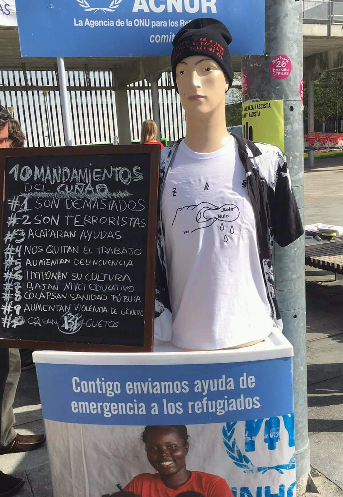
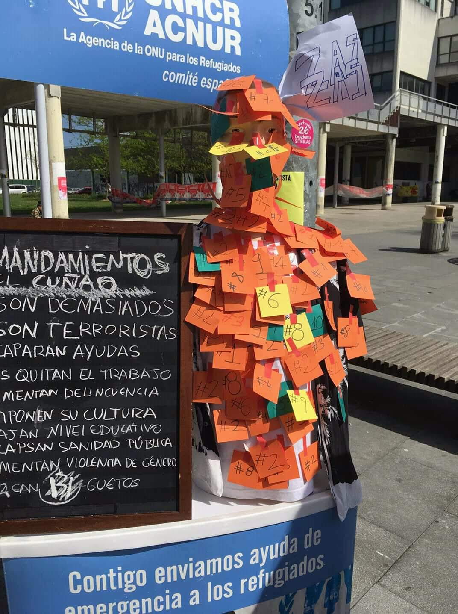
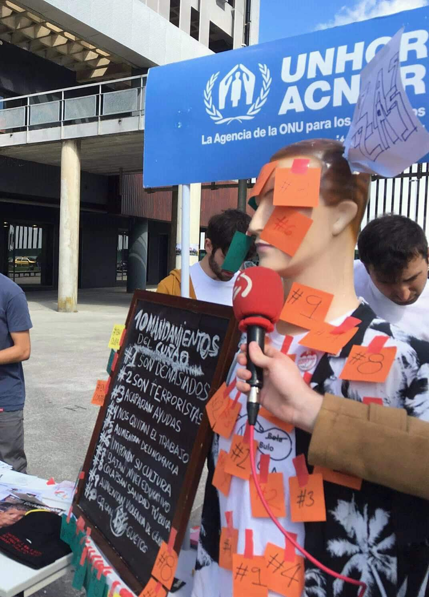
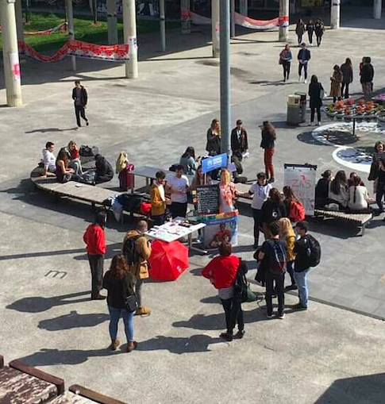

Public relations staff during the MTV EMA 2018 in bilbao.
Loreal brand image in the hairdressing section
INTERNSHIP EXPERIENCE
Creation of a advertising campaign for UNHCR to raise awareness about false rumors associated with Refugees / Immigrants




Attendance as a journalist to a Congress of Cyber Journalism in Bilbao, Spain.
VOLUNTEERING EXPERIENCE
Volunteering with intellectually disabled people with the ANFAS association
The volunteering was organized by the Religious of Mary Immaculate. We meet two days a week and help them with homework and the learning process. Then we would play games, do therapy, and try to be an emotional support for them.
I was a monitor during the summer in a camp with intellectually disabled people and with developmental disorders. For 15 days we slept in a hostel in another city where we took care of all the care they required as well as organizing activities and adapted trips so that they could enjoy the summer.
Volunteering giving private lessons to children without resources
The volunteering was organized by the Religious of Mary Immaculate. We meet two days a week and help them with homework and the learning process. Then we would play games, do therapy, and try to be an emotional support for them.